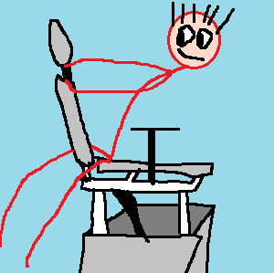
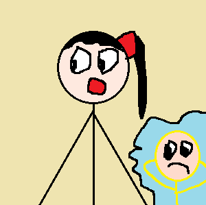
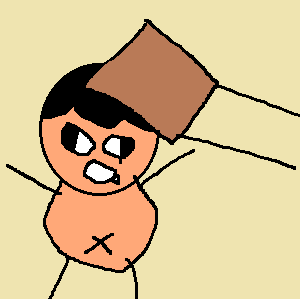

第278篇 日记
2026年10月22日 多云转阴 Thu.
日常生活：锦衣卫胡欣妍

今天中午，席老师叫大家把坏的椅子搬出去，会有人来修。很快，大家都把坏椅子退了出去，唯一的意外是王宸希推椅子时压到了我的左手小指。许梓浩坐在坏椅子上还玩起了坦克大战。吴雨哲和李钧宸也和他一起玩。我中午要值日，所以不能和他们一起去玩。中午熊老师坐班，熊老师见那些椅子在外面的人只能站着，于是大吼道：“谁叫你们搬椅子的？”我们说是席老师叫我们搬的。熊老师说：“那正好，你们都站着听。”看着那些站着的同学，我心里想：“还好我的椅子没有坏。”

下午第二节课是郭老师的科学，现在，熊老师让一个实习老师王老师来这里，因为郭老师临时有事，不能来上课。在这之前，熊老师安排胡欣妍这节课来记名字，于是吴雨哲在草稿纸上写道告诉我：“胡欣妍是锦衣卫！Don't say!”
王老师受熊老师之名，给我们投放大本题目。有很多人因为看不清，椅子在外面，或想和朋友玩，都跑到前面或朋友座位上抄题目。这场面混乱不堪。刘子乐因为在前面与余乐熙打闹，挨了实习老师一棍。于是刘子乐成为第一个被实习老师打的同学，也是实习老师教鞭生涯中第一个打的同学。我看向徐浩宸，不住眉开眼笑，原来做三个同学的椅子现在坐了五个人！蔡佳莉、沈书灿、徐浩宸、吴芊锦、王思彤。徐浩宸被四个女生夹在一起，还可以对着我，双手比耶地笑。
忽然，“光绪帝”宁政源拿起大本，重重打在周满欣的身上。那声音如同天崩地裂。王老师走来问道：“这是怎么回事？为什么打她?”宁政源生气时只是睁大眼睛：“她抄我作业！”

下一节语文课上，宁政源在此举报周满欣：“周满欣的椅子坏了还不推出去！”杨老师骂周满欣道：“推出去！这次你不推出去修，下次别的同学坐上来，坐的还能是坏的吗？”大家看下周坐上那个位置的蔡佳亭。几个调皮的男生唾骂着周满欣道：“对！真他妈自私！”